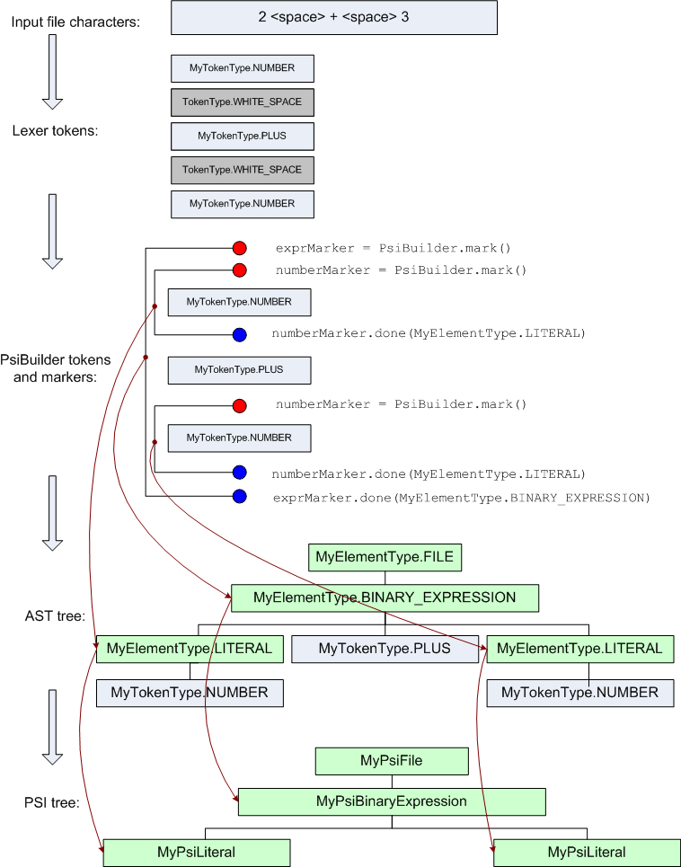

实现解析器与 PSI
在 IntelliJ Platform 中解析文件的过程有两步。
首先, 建立一个抽象语法树（AST），定义程序的结构。
AST 节点通过 IDE 内部地创建，并且由
ASTNode
类的示例表示。
每个 AST 节点都有一个相关联的元素类型
IElementType
实例，并且元素类型由语言插件定义。
文件的 AST 树的顶级节点需要拥有一个特殊的元素类型，它实现了
IFileElementType
接口。
AST 节点直接映射到底层文档的文本范围。 AST 的最底层节点与 lexer 返回的单个 token 匹配，并且高阶的节点与多 token 片段匹配。 在 AST 树上的节点执行的操作，例如插入，移除，重新排序节点等等，立即反映为底层文档的文本的改变。
其次，PSI、或是程序结构接口、树是构建在 AST 上的，添加用于处理特定语言构造的语义与方法。
PSI 树的节点由实现了
PsiElement
接口的类表示，并且在
ParserDefinition.createElement()
方法中通过语言插件创建。
对于文件的 PSI 树的顶层节点需要实现
PsiFile
接口，并且在
ParserDefinition.createFile()
方法中创建。
示例:
Properties language plugin
的
ParserDefinition
PSI 的生命周期在 Fundamentals 中有更详细的描述。
PSI 实现的基类，包含
PsiFileBase，它是
PsiFile
的基础实现，
以及
ASTWrapperPsiElement，它是
PsiElement
的基础实现，
它们由 IntelliJ Platform 提供。
虽然可以手写 parser，但我们更推荐使用 Grammar-Kit 插件从 grammar 中生成 parser 与相应的 PSI 类。 除了代码生成，它还为编辑 grammar 文件提供了各种特性：语法高亮，快速导航，重构等等。 Grammar-Kit 插件使用它自己的引擎构建；可以在 GitHub 中找到它的源代码。
为了重用已存在的 ANTLRv4 grammar，参见 antlr4-intellij-adaptor 库。
语言插件提供 parser 实现，作为
PsiParser
接口的实现，它从
ParserDefinition.createParser() 中返回。
Parser 接收一个
PsiBuilder
类的实例，它用于从 lexer 中获取 token 流，以及保持正在构建的 AST 的中间状态。
Parser 必须处理由 lexer 返回的所有 token（即使根据语法，该 token 是无效的），也就是说，直到
PsiBuilder.getTokenType()
返回 null。
示例：
Properties language plugin
的
PsiParser 实现。
Parser 的工作原理是：在从 lexer 接收的 token 流中设置成对的标记（
PsiBuilder.Marker
实例）。
每对标记都为在 AST 树中的单个节点定义 lexer token 的范围。
如果一对标记嵌套在另一对标记中（在其起点之后开始，在其终点之前结束），它将成为外部对（译者注：pair）的子节点
The element type for the marker pair and for the AST node created from it is specified when the end marker is set, which is done by making call to
PsiBuilder.Marker.done()。
也可以在设置末端标记之前删除起始标记。
drop() 方法仅删除单个起始标记，而不影响后面添加的任何标记，roolbackTo() 方法删除起始标记与之后添加的所有标记，并且将 lexer 的位置还原到起始标记。
这些方法可以在用于解析时实现 lookahead。
当你不知道在读取更多输入之前，不知道某个位置需要多少标记的时候，
PsiBuilder.Marker.precede()
方法对于从右到左的解析很有用。
例如，二元表达式 a+b+b 需要被解析为 ( (a+b) + c )。
因此，token “a” 的位置需要两个起始标记，but that is not known until the token ‘c’ is read。
当 parser 抵达跟在 “b” 后面的 token “+” 时， 可以调用 precede() 来重复位于 “a” 的起始标记，然后将其匹配的结束标记放在 “c” 后。
PsiBuilder
的一个重要特性是它对空格和注释的处理。
被当做空格或注释的 Token 类型通过
ParserDefinition
类中的 getWhitespaceTokens() 与 getCommentTokens() 方法定义。
PsiBuilder
将自动忽略来自它传给
PsiParser 的 token 流的空格和注释 token，
并且调整 AST 节点的 token 范围，因此节点将不会包含前导与后缀的空格 token。
从
ParserDefinition.getCommentTokens()
返回的 token 集合也用于寻找 TODO 项。
为了更好地理解为简单表达式构建 PSI 树的过程，你可以参照下图：

一般来说，有不止一种正确的方式来为自定义语言实现 PSI，并且插件作者可以选择对于编写代码来说最方便的（错误解析，重构等） PSI 结构和方法集合。
然而，为了支持类似于重命名与查找使用的功能，自定义语言 PSI 实现需要使用一个基础接口。
所有可以被重命名或是被引用（类定义，方法定义等）的元素需要实现
PsiNamedElement
接口的 getName() 与 setName() 方法。
许多用于实现和使用 PSI 的函数可以在 com.intellij.psi.util 包中找到，特别是
PsiUtil
与
PsiTreeUtil
类。
一个对于调试 PSI 实现有帮助的工具： PsiViewer plugin。 它可以为你展示你的插件所构建的 PSI 结构、所有 PSI 元素的属性和高亮文本范围。
更多进阶主题 请看 Indexing and PSI Stubs